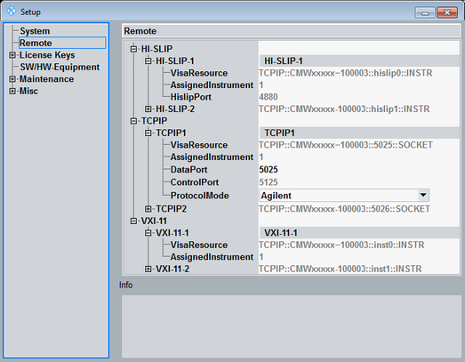

The "Remote" section of the "Setup" dialog lists all available interface and protocol types for remote control of the instrument and their parameters.
- HI-SLIP (LAN connector, HiSLIP protocol)
- VXI-11 (LAN connector, VXI-11 protocol)
- IEC (GPIB bus interface, option R&S CMW-B612A or R&S CMW-B612B)
- USB2 ("USB Remote" connector)
- TCPIP (LAN connector, VISA socket resource)
For remote control via LAN, it is recommended to use the HiSLIP protocol.
The entries at the second level correspond to one remote channel each. Each channel is assigned to one subinstrument.
See also "Multiple Channels for Remote Access"

Most connection parameters are fixed and displayed for information only. The most important parameters are described below.
The resource string depends on the protocol type and the assigned address information. Each remote channel is identified by a different VISA resource string.
- HI-SLIP: "TCPIP[board]::<IP_address>[::<device_name>[,<IP_port>]][::INSTR]"
– <device_name>: equals hislip<n-1> for subinstrument n – <IP_port>: default port number is 4880 - VXI-11: "TCPIP[board]::<IP_address>[::<device_name>][::INSTR]"
– <device_name>: equals inst<n-1> for subinstrument n - IEC: "GPIB[board]::<primary_address>[::INSTR]"
- USB2: "USB::<vendor_ID>::<product_ID>::<serial_number>[::INSTR]"
– <vendor_ID>: hexadecimal AAD / digital 2733 for Rohde & Schwarz – <product_ID>: identification of the instrument type, equals 87 (0x57) – <serial_number>: serial number of the instrument - TCPIP: "TCPIP[board]::<IP_address>::<data_port>[::SOCKET]"
Identifies the subinstrument to be controlled. This parameter is fixed. If only one subinstrument is available, it is addressed as "Assigned Instrument 1".
See also "Subinstruments".
Via USB, only subinstrument 1 can be controlled in the present software version. Use another protocol type to control other subinstruments.
For VXI-11 and HiSLIP, the "Assigned Instrument" number is also part of the VISA resource string, with instrument 1 mapped to 0, instrument 2 mapped to 1, and so on.
Remote command:n/a
The data port number is part of the TCPIP VISA resource string. Use different data ports for different channels (to address different subinstruments). The data port is used for all protocol modes.
- To modify the port number, enter a 0. A free port in the range 1024 to 32767 is then assigned automatically.
- Alternatively, enter a port number in that range manually.
- Never configure a port number in the range 1 to 1023. These "well-known ports" are reserved for specific services.
The control port is only relevant for protocol mode "Agilent". It can be used to set up an optional control connection for transfer of emulation codes. The control port number is displayed for information. It cannot be modified.
Remote command:n/a
- RAW: no support for polling and service request (but best performance)
- Agilent: emulation codes via control connection (control port)
- IEEE1174: emulation codes via data connection (data port)
One or two optional GPIB bus interfaces can be installed (options R&S CMW-B612A and R&S CMW-B612B). The two interfaces have different board names. Board number 0 is related to connector "IEEE 488 CH 1", board number 1 to connector "IEEE 488 CH 2".
Remote command:n/a
The primary address is part of the GPIB VISA resource string. Use different primary addresses for different channels (to address different subinstruments).
Remote command:Enables or disables a GPIB remote channel. Up to four channels are available. Two subinstruments can be controlled using/enabling either two channels of one board or one channel per board.
Remote command: